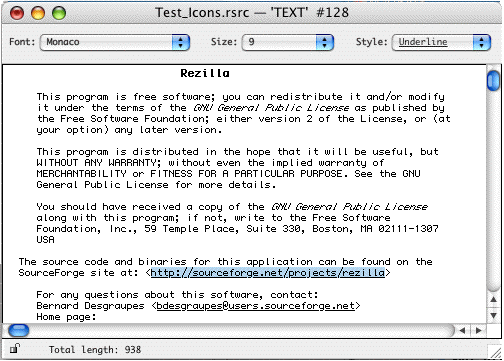
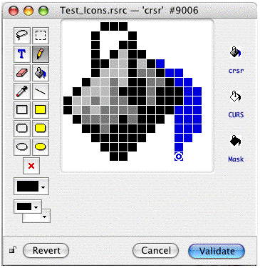

Interface editors (aka dedicated editors) are editing modes which provide a graphical user interface specifically dedicated to a particular type (or family of types). An interface editor is different from the template editor because it does not rely on the existence of a descriptive template. It is generally more powerful than a template: for instance, you can edit the contents of a 'TEXT' resource using a template but this won't take account of style info, whereas the Text editor will support this. There are types which can not be described easily by a template anyway.
The interface editors are sometimes called graphic editors. This is an improper denomination because the templates editor does also build graphic interfaces.
Rezilla provides various interface editors introduced in successive versions:
Future versions of Rezilla will have additional interface editors.

If you edit a resource with type 'TEXT' for which a 'styl' resource with the same ID exists, Rezilla reads the style information contained in this resource (font, size, face) and applies it to the text. Otherwise, the text resource is displayed using the default style settings.
When a new resource with type 'TEXT' is created, the text editor uses the default settings too. If some modifications have been made using one of the three menus, Rezilla will automatically create a 'styl' resource with the same ID as the 'TEXT' resource itself upon saving, in order to store the style information.
'cicn', 'crsr', 'CURS', 'icl4', 'icl8', 'icm#', 'icm4', 'icm8', 'ICN#', 'ICON', 'ics#', 'ics4', 'ics8', 'PAT ', 'ppat'
The bitmap editor provides several tools to help creating or modifying a bitmap image resource. A typical bitmap editing window will look like this:

The left hand side of the window contains editing tools and pattern and color buttons. The following tools are available (from left to right and from top to bottom): lasso, selection, text, pencil, eraser, bucket, dropper, line, rectangle, filling rectangle, round corners rectangle, round corners filling rectangle, oval, filling oval. Additionally, the cursors windows have a red x-cross tool to locate the hotspot of the cursor.
Below the tools palette are three popup buttons giving access to the patterns palette, the foreground color palette and the background color palette.
In the middle of the window is the editing canvas where one can modify each pixel of the bitmap using one of the editing tools.
On the right hand side of the window, the sample panel displays images of the bitmap at its actual size. It is updated immediately when the editing canvas in the middle of the window is modified.
When a bitmap editing window is open, four additional menus are inserted in the menu bar:
The Copy, Cut and Paste commands are enabled. You can copy the image to the clipboard (no need to select anything, the entire image is automatically copied). On the contrary, if the clipboard contains a picture (more technically speaking, contains data with 'PICT' flavor), Rezilla will replace the current image by the contents of the clipboard.
This allows you to create images in another graphic application and import it into Rezilla . Note that you can also paste graphic data directly from the clipboard to a resource map document in Rezilla (see the Copy, Cut and Paste section in this document).